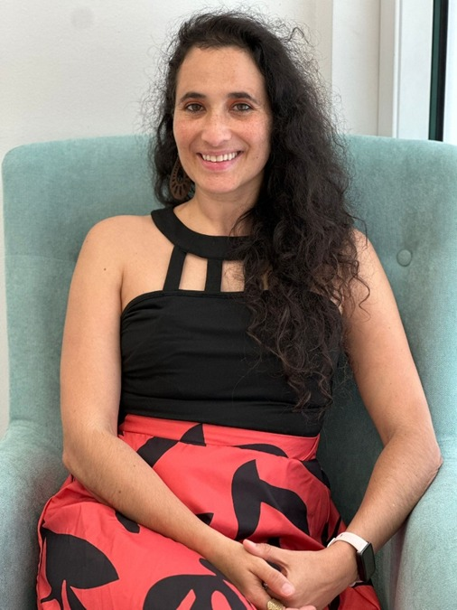

Espaço terapêutico que integra psicologia, movimento e
arte.
Acompanhamento psicológico online e presencial nas Caldas da Rainha à luz do EMDR e da
hipnose clínica. Complementado por aulas regulares de dança expressiva e movimento consciente, criando
um espaço que vai além da psicologia tradicional e integra corpo, emoção e expressão.
Integrar as raízes para mudar o presente
e reconectar com a
vida.

Sobre Mim
Desde cedo que me fascina o ser humano — emoções, pensamentos,
comportamentos. A curiosidade levou-me a investir em diversas formações e a fazer a minha
própria jornada de autoconhecimento, onde descobri a força dos processos de transformação e dos
movimentos internos que ampliam a consciência.
Gosto de ouvir cada estória e caminhar ao
lado de quem procura uma versão mais inteira de si. Cada percurso é único e carrega sabedoria,
como o casulo que se abre para a borboleta voar.
Acredito em mudanças profundas:
reconstruir estruturas internas, crenças, libertar padrões e integrar o merecimento, a
autoestima e descobrir quem se é. É nesse processo que nasce um novo capítulo, onde cada pessoa
se torna mestre da sua própria história.
O meu percurso começa muito antes da psicologia com uma licenciatura em português-alemão. A partir desse momento comecei a fazer yoga e com isso descobri o mundo do desenvolvimento pessoal em 1999. Fiz inúmeras formações alimentando o meu interesse e também fazendo o meu caminho.
Mais tarde em 2018 termino a Licenciatura em Psicologia (Universidade Europeia) e em 2020 o mestrado em Psicologia Clínica e do Aconselhamento (Universidade Autónoma de Lisboa). Nesse percurso fiz estágio observacional no Hospital Júlio de Matos e na Casa da Barragem.
Fiz também formação em Hipnose Clínica com a Cristina Fernandes e a Fátima Diniz da Reconstruir, assim como a formação de formadores. O meu estágio académico foi nas Irmãs Hospitaleiras no centro de dia como terapia de grupo.
O meu estágio profissional foi feito na Clínica Horizonte na área das dependências químicas e comportamentais, tendo feito na mesma altura formação pela CRIAP de adições químicas e comportamentais e na Wecareon (consultas online). O meu interesse pela área do trauma leva-me ao EMDR, tendo feito o nível 1 e 2, sendo registada na Associação EMDR Portugal nº 431.
E como a psicologia é um mundo tão rico e a arte sempre me mostrou uma forma tão bonita de ampliarmos processos internos, fiz um mestrado em terapias psicoexpressivas pelo IASE, continuei no ISPA com as bases da dança terapia. Segui para o curso de dança expressiva e movimento consciente e danças circulares.
O meu percurso profissional começou antes da psicologia, pois sou licenciada também em Línguas e Literaturas Modernas pela Universidade Nova de Lisboa. Trabalhei no gabinete de relações públicas no Ministério da Administração Interna, trabalhei como assistente de produção na RTP e fui coordenadora de uma escola em Oeiras em 2012.
Depois do mestrado em psicologia, fiz em 2021 o estágio profissional na Clínica Horizonte, uma comunidade terapêutica, e na Wecareon, uma plataforma de consultas online. Aqui aprendi a facilitar sessões de grupo regulares, palestras, e a fazer consultas online.
Acredito num cuidado psicológico que reconhece a história única de cada pessoa e a forma como as experiências, sobretudo as traumáticas, moldam o corpo, a mente e a forma de estar no mundo. Trabalho com uma abordagem que integra EMDR, hipnose clínica e outras práticas contemporâneas, procurando ir às origens do trauma, onde a dor se instalou, para que a transformação possa acontecer de forma profunda e segura.
O meu foco é apoiar cada pessoa no processo de integração — compreender o que viveu, ressignificar memórias difíceis e fortalecer recursos internos. Acredito que o autoconhecimento, aliado a uma relação terapêutica sólida, promove empoderamento, aumento da autoestima e a capacidade de construir um caminho de mudança consistente e alinhado com quem se é.
Ao longo dos anos, desenvolvi uma prática clínica assente na escuta ativa, na presença, na empatia e no respeito. Esta experiência permite-me trabalhar com diferentes histórias, ritmos e necessidades, sempre com respeito pela individualidade de cada pessoa.
Mantenho-me na Wecareon e na WOW facilitando consultas online a particulares e empresas. Trabalho na Fábrica Bordallo Pinheiro com consultas presenciais.
Para além disso realizo também acompanhamento psicológico a particulares online e presencial nas Caldas da Rainha.
O EMDR (Dessensibilização e Reprocessamento através dos Movimentos Oculares) é uma abordagem psicoterapêutica desenvolvida por Francine Shapiro. É amplamente utilizada no tratamento de traumas, experiências emocionalmente perturbadoras, ansiedade, fobias, depressão, entre outras dificuldades psicológicas.
O EMDR baseia-se na ideia de que algumas experiências difíceis ou traumáticas podem ficar "presas" no sistema nervoso sem serem adequadamente processadas. Quando isso acontece, as memórias permanecem associadas às emoções, sensações físicas e crenças negativas vividas no momento do acontecimento.
O objetivo do EMDR é ajudar o cérebro a reprocessar essas memórias, reduzindo o sofrimento emocional associado e permitindo que a pessoa integre a experiência de forma mais adaptativa.
Após o processamento de uma memória traumática, é frequente que a pessoa recorde o acontecimento sem a intensidade emocional anterior, desenvolva crenças mais adaptativas sobre si mesma, apresente menos sintomas de ansiedade ou stress e sinta maior sensação de controlo e segurança.
Importa referir que o EMDR não apaga memórias. O que muda é a forma como essas memórias ficam armazenadas e o impacto emocional que exercem na vida da pessoa.
Para além do EMDR também utilizo Hipnose Clínica nas minhas consultas, como uma ferramenta complementar ao acompanhamento terapêutico, sempre de forma personalizada e adaptada às necessidades de cada pessoa.
A hipnose clínica é um estado natural de concentração e foco profundo que permite aceder a recursos internos, promover mudanças positivas e trabalhar questões emocionais, comportamentais ou psicossomáticas de forma mais eficaz. Durante o processo, a pessoa mantém-se consciente, com controlo sobre si própria e capaz de interromper a experiência a qualquer momento.
Esta abordagem é útil no tratamento da ansiedade, stress, fobias, depressão, traumas, melhoria da autoestima, alteração de hábitos, entre outras questões. O objetivo é facilitar o autoconhecimento, reforçar competências pessoais e potenciar o bem-estar físico e emocional.
A hipnose clínica é utilizada de forma ética, segura e integrada num plano terapêutico mais amplo, respeitando sempre os objetivos e o ritmo de cada cliente.
Melhorar os relacionamentos interpessoais e a gerir os traumas.
Autoconhecimento e desenvolvimento da inteligência emocional.
Reconhecimento das habilidades, qualidades, limitações e maior auto-controlo.
Liberdade de expressão e ajuda a encontrar um sentido para a vida.
A fase inicial da consulta em que recolho informações sobre a sua história pessoal, emocional, familiar e de saúde, com o objetivo de compreender melhor a situação atual e definir a abordagem terapêutica mais adequada.
A etapa em que identificamos, de forma clara e realista, as mudanças que pretende alcançar. Estes objetivos orientam o processo e permitem adequar as intervenções às suas necessidades.
A fase em que são aplicadas técnicas e estratégias adequadas, promovendo mudanças positivas nos pensamentos, emoções e comportamentos, adaptadas ao progresso de cada pessoa.
A fase final em que são avaliados os objetivos alcançados, consolidadas as aprendizagens e reforçada a autonomia para manter o bem-estar emocional no dia a dia.
Após a entrevista clínica,
estabelece-se um conjunto de objetivos terapêuticos totalmente adaptados ao que a pessoa precisa
naquele momento da sua vida. O processo é sempre participativo: a pessoa envolve-se ativamente
na compreensão das suas emoções, dos pensamentos que a influenciam e dos comportamentos que
resultam desses padrões internos. Esta participação permite que desenvolva consciência,
autonomia e capacidade de mudança.
No final, o propósito é ampliar a funcionalidade
emocional, promover bem-estar psicológico e contribuir para uma melhoria consistente da
qualidade de vida.
Compromisso com o sigilo
profissional e proteção dos seus dados pessoais, assegurando confidencialidade. A relação
clínica é construída de forma cuidadosa, baseada na confiança, na empatia e no respeito profundo
pela individualidade de cada pessoa.
Este vínculo cria um ambiente verdadeiramente seguro
e acolhedor, onde não existe julgamento e onde a pessoa se pode sentir escutada/o, validada/o e
compreendida/o na sua totalidade.
A arte surge como expansão: uma forma de presença, criação e transformação interna. Tal como o movimento, permite dar forma ao que muitas vezes permanece sem palavras, abrindo caminhos para compreender, integrar e transformar experiências difíceis. Num trabalho sensível com o trauma, o corpo, a emoção e a expressão criativa tornam-se recursos essenciais para restaurar a segurança, fortalecer a ligação consigo próprio e voltar a sentir a vida com maior autenticidade.
Existem múltiplas formas de arte — dança,
música, teatro, cinema, colagens, desenho, pintura, escultura, escrita, entre tantas
outras.
A arte salva vidas, porque nela podemos ser livres, porque nela nos permitimos Ser, sem julgamento.
Desta forma, a arte atua nos processos terapêuticos como uma ponte de comunicação não verbal, permitindo aceder, externalizar e reestruturar emoções complexas que a fala nem sempre consegue traduzir.
A liberdade é a condição essencial para
que a arte funcione terapeuticamente.
Sem o compromisso de criar algo "bonito", "certo"
ou tecnicamente perfeito, a pessoa ganha espaço para expor o seu mundo interno de forma autêntica.
Não é preciso responder a expetativas estéticas ou regras formais. O valor do trabalho reside no significado que ele tem para quem o cria, e não na avaliação externa.
A espontaneidade e a interação livre com materiais contornam as defesas racionais e os filtros lógicos do cérebro, permitindo que as emoções reprimidas venham à superfície.
No processo criativo, decidem-se as cores, as formas, os ritmos ou os cortes. Essa tomada de decisão desenvolve uma sensação de controlo e autonomia — fundamental para quem se sente estagnado ou impotente perante os seus problemas.
Em suma, a liberdade criativa transforma o ato terapêutico num laboratório seguro onde é possível experimentar, errar, reconfigurar a própria narrativa e descobrir novas perspetivas sobre si mesmo.
A identificação com os outros contribui para compreendermos que não estamos sozinhos a lidar com o problema, para em conjunto aprendermos estratégias que ajudem e favoreçam uma melhoria nos sintomas e um maior autoconhecimento.
Os grupos terapêuticos visam o acolhimento de problemas psicológicos em que os membros podem interagir entre si, e o facilitador promove a tomada de consciência como catalisador, criando um ambiente seguro de mútuo respeito, compreensão e aceitação dos aspetos emocionais, favorecendo o sentido de pertença e de universalidade.
No grupo terapêutico terapia com arte és convidado/a a expressar o que sentes através da arte de forma livre. Trabalhamos com lápis de cor, colagens, plasticina, pintura, desenho, som, dança, fotografia entre outros.
O objetivo é compreender para ti mesmo/a o que diz aquilo que fizeste sobre ti, sobre o teu mundo interior, as tuas emoções, pensamentos e acções que tens feito para o mundo.
A integração da criação plástica num ambiente de grupo oferece benefícios terapêuticos:
Comunicação além das palavras
A arte funciona como uma ponte intermédia. Permite dar forma a conteúdos inconscientes, sentimentos complexos ou memórias difíceis sem a necessidade ou pressão de os traduzir imediatamente em palavras.
Quebra do isolamento e validação mútua
Compreender que outros elementos do grupo partilham dores, bloqueios ou dilemas semelhantes reduz a sensação de solidão e promove um sentimento profundo de empatia e pertença.
Múltiplas perspetivas
A observação da obra e a partilha dos outros participantes oferece novas formas de olhar para os próprios desafios. O trabalho do outro muitas vezes reflete ou desbloqueia conteúdos pessoais.
Espaço seguro para experiências
O grupo e os materiais artísticos funcionam como um laboratório onde é possível testar novas abordagens e técnicas — como ultrapassar o perfecionismo, lidar com a frustração ou impor limites — num ambiente acolhedor e sem julgamento estético.
Simbolização e ressignificação
A criação de um objeto permite projetar e dar vida à experiência interior fora do corpo, facilitando a tomada de distância emocional para refletir e dar novos significados à própria história.
No meu caso também eu pinto quadros, porque é uma outra forma de me expressar e partilhar beleza com o mundo.
Ao longo do meu percurso como psicóloga, tenho descoberto também na escrita um recurso terapêutico, onde a escuta de mim e do outro se traduz em clareza, integração e autocuidado. Desta forma tenho um livro que estou a escrever para publicar.
A dança é a oração do corpo. Quando as palavras não chegam, o movimento torna-se uma outra forma de comunicar e de expressar o seu mundo interior.
Através da dança é possível fazer o seu processo interno também, de uma forma diferente, pode ser um complemento perfeito para quem faz terapia e para que não faz é uma outra forma de linguagem com o corpo, sobre o corpo, sobre o seu mundo interno, sobre si. Como sabemos o trauma está no corpo, e é pelo corpo que seguimos.
As aulas de dança têm uma estrutura de 6 partes, em que vamos fluindo por cada uma delas. Conectamo-nos, meditamos, dançamos, temos dinâmicas individuais e a pares, relaxamos. Existe um princípio, um meio e um fim que não termina, levamos tudo isso que acontece para a nossa vida. Cada aula é única e iremos ouvir muitos estilos de música diferentes, do rock ao fado, do jazz à música portuguesa, brasileira e africana, passando pelas sevilhanas, salsa e tango. Tudo isso irá também enriquecer a tua cultura musical tornando-a mais rica mesmo que não gostes de tudo.
As aulas de dança expressiva e movimento consciente acontecem todas as semanas. Contacta-me para mais informações.
Não é importante saber dançar, é importante estar disponível para dançar, para se conectar com o corpo, com ritmos, e para dinâmicas individuais e a pares. Nesse processo conhecemos melhor o nosso corpo, o que gostamos mais e o que não gostamos. Se somos de movimentos de abrir ou fechar, se preferimos rodopiar ou ficar no lugar, se é o chão que nos prende ou o céu que nos chama, se preferimos dançar a sós ou a pares. E em cada sessão podes mudar, podes ir descobrindo outras formas e perspetivas.
É possível dançar o que sentimos, o que queremos expressar mas não conseguimos pôr em palavras, é possível dançar os nossos pensamentos, os nossos desejos. O corpo sabe.
"A dança é a linguagem escondida da alma."
Martha Graham
As aulas de dança expressiva e movimento consciente combinam expressão artística, consciência corporal e bem-estar emocional, oferecendo benefícios em várias dimensões:
Libertação emocional e alívio de stress
Proporcionam um espaço seguro para libertar tensões acumuladas, frustrações e emoções estagnadas através do movimento livre, sem julgamento nem necessidade de "saber dançar".
Conexão mente-corpo (Mindfulness em movimento)
Ajudam a trazer a atenção para o momento presente, desenvolvendo uma maior perceção dos sinais e limites do próprio corpo (proprioceção e interoceção).
Processamento de traumas e bloqueios
Como o corpo guarda memórias emocionais, o movimento livre permite aceder e integrar sentimentos difíceis de verbalizar.
Autoexpressão e criatividade
Estimulam a espontaneidade, a intuição e a redescoberta da linguagem corporal única de cada pessoa.
Melhoria do bem-estar físico
Promovem a mobilidade articular, o equilíbrio, a postura, a circulação sanguínea e a vitalidade geral de forma suave e orgânica.
Integração e conexão social
Quando realizadas em grupo, promovem o sentimento de pertença, empatia e conexão interpessoal não verbal.
As aulas são indicadas para quem procura desacelerar, cultivar o autoconhecimento ou simplesmente reaprender a habitar o próprio corpo com leveza e presença. Cada aula é única.
Após a avaliação clínica, são definidos objetivos terapêuticos ajustados às necessidades de cada pessoa. O/a próprio/a terá sempre uma participação ativa no processo terapêutico, promovendo uma maior compreensão das suas emoções, pensamentos e comportamentos. O objetivo final passa por aumentar a funcionalidade da pessoa, promover o bem-estar emocional e melhorar a sua qualidade de vida.
Toda a intervenção psicológica é sustentada por mais de uma década de experiência prática e fundamentada em evidência científica atualizada, rigorosa e alinhada com as melhores práticas da Psicologia e da Terapia Cognitivo-Comportamental.
Compromisso com o rigor ético, sigilo profissional e proteção dos seus dados pessoais. A relação terapêutica é construída com base na confiança, empatia e respeito, proporcionando um espaço seguro, acolhedor e livre de julgamentos, onde se possa sentir ouvido/a e compreendido/a.
A adição pode assumir diferentes formas e comportamentos dependentes. Pode ser física, envolvendo o consumo de substâncias que alteram o sistema nervoso e o humor, como o álcool e as drogas psicotrópicas, ou comportamental, relacionada com o jogo, o trabalho, a alimentação, entre outros.
Em ambos os casos, existe uma necessidade crescente de aumentar a frequência ou intensidade do consumo ou comportamento para alcançar o mesmo efeito inicial. Com o tempo, surge perda de controlo e, mesmo perante consequências negativas na vida pessoal, profissional ou relacional, torna-se difícil interromper esse padrão.
A adição é uma doença crónica, progressiva e pode ser fatal. No entanto, com acompanhamento adequado, é possível controlá-la, podendo recuperar a sua qualidade de vida.
A ansiedade caracteriza-se por uma preocupação excessiva, persistente e difícil de controlar. Pode manifestar-se através de sintomas físicos (e.g., dores de cabeça, cansaço e alterações do sono), sociais (e.g., evitar encontros ou situações sociais), ocupacionais (e.g., desinteresse pelos hobbies ou pelas atividades habituais) e, naturalmente, emocionais (e.g., tristeza, medo e irritabilidade).
A ansiedade está orientada para o futuro, envolvendo a antecipação e a projeção de acontecimentos negativos e/ou percecionados como ameaçadores.
O acompanhamento psicológico ajuda a compreender a origem desta preocupação e a desenvolver formas mais eficazes de lidar com ela, devolvendo maior sensação de controlo e tranquilidade.
O autoconhecimento permite compreender melhor quem somos, o que valorizamos e a forma como pensamos, sentimos e agimos. Este processo envolve explorar emoções, valores, necessidades, motivações, características pessoais, pontos fortes, limitações e padrões de comportamento.
Ao desenvolver maior consciência sobre si próprio/a, torna-se possível construir uma vida com maior coerência e liberdade, fazendo escolhas mais alinhadas com as suas necessidades, em vez de reagir apenas ao contexto ou às expectativas dos outros.
O autoconhecimento é basilar para a construção da inteligência emocional, constituindo um processo contínuo e transformador, essencial para viver em harmonia consigo próprio/a, com os outros e com o meio que o rodeia
O desenvolvimento pessoal não consiste em procurar a perfeição, mas sim em trabalhar, ao ritmo de cada pessoa, na construção de uma versão mais consciente, equilibrada e funcional de si próprio/a.
Este processo não se destina apenas a quem enfrenta dificuldades, mas a qualquer pessoa que sinta vontade de evoluir, definir prioridades e objetivos de vida.
Cada pessoa é única e possui um valor próprio. Neste percurso, é possível descobrir-se com maior profundidade e promover transformações que aproximem a sua vida daquilo que realmente deseja para si.
A autoestima consiste em reconhecer as próprias qualidades e limitações, aceitando-as com compaixão e respeito por si próprio/a. Neste processo, construiremos uma relação mais saudável consigo próprio/a, baseada no respeito, aceitação e compaixão.
A autoconfiança constrói-se através da capacidade de reconhecer que os erros e dificuldades fazem parte do percurso de vida, sem comprometer o nosso valor pessoal.
Promover a autoestima e a autoconfiança permite enfrentar desafios com maior segurança e estabelecer uma relação mais positiva consigo próprio/a.
A depressão está frequentemente associada a um acontecimento precipitante, habitualmente relacionado com perda. Os sintomas mais predominantes são o humor deprimido ou irritável e a diminuição ou ausência de afeto positivo.
Os sintomas emocionais podem incluir sentimentos de culpa, desvalorização, desamparo e falta de confiança. Os sintomas comportamentais e físicos podem manifestar-se através de choro fácil, isolamento social, diminuição da libido e fadiga, podendo, em alguns casos, evoluir para comportamentos de automutilação e/ou ideação suicida.
Os sintomas cognitivos podem incluir dificuldades de concentração e atenção, pensamentos negativos persistentes e ruminação. De forma geral, a pessoa tende a ver-se de forma negativa, sentindo-se inadequada, sem valor ou incompetente. O mundo é percecionado como um lugar cheio de obstáculos e o futuro é frequentemente encarado com falta de esperança.
O acompanhamento psicológico permite compreender a experiência da pessoa, trabalhar os fatores envolvidos e desenvolver estratégias que, promovam maior equilíbrio emocional e qualidade de vida.
As emoções fazem parte da experiência humana e não existem emoções "boas" ou "más";
existem
formas mais ou menos ajustadas de lidar com aquilo que sentimos.
A gestão emocional
envolve aprender a reconhecer, compreender e aceitar as próprias emoções, desenvolvendo
formas mais equilibradas de as gerir e expressar.
Desta forma, será possível responder com maior consciência, equilíbrio e capacidade de adaptação às diferentes necessidades e situações da vida.
A terapia familiar é uma forma de psicoterapia que envolve, em simultâneo, vários elementos da família, com o objetivo de melhorar a comunicação, resolver conflitos ou situações de crise e fortalecer as relações familiares.
O objetivo não é encontrar culpados, mas compreender os padrões de funcionamento da família e de relacionamento que podem ser melhorados.
A terapia de casal é uma forma de psicoterapia realizada com duas pessoas que, mantêm uma relação amorosa, com o objetivo de melhorar a relação, resolver conflitos e fortalecer a ligação emocional.
Não se destina apenas a "casais em crise", podendo também ter um carácter preventivo, ajudando a melhorar a comunicação, fortalecer a relação e promover um maior entendimento mútuo.
Na terapia de casal não se procura determinar quem está certo ou errado, mas compreender de que forma a relação pode funcionar com maior harmonia, respeito e equilíbrio.
O trauma pode resultar de diversos acontecimentos que, ameaçam a vida ou a segurança da pessoa, de forma direta ou indireta, como agressões, guerra, violação, acidentes graves, morte ou abuso. Geralmente, trata-se de uma experiência repentina e inesperada, que provoca um forte impacto emocional, podendo ter uma duração curta ou prolongada.
O trauma pode levar a pessoa a sentir-se mais vulnerável, insegura e com uma diminuição da autoestima. O acompanhamento psicológico ajuda na integração da experiência traumática e na recuperação do equilíbrio emocional.
A intervenção em crise consiste numa resposta rápida e de curta duração, destinada a ajudar a pessoa a lidar com uma situação emocionalmente intensa, na qual o equilíbrio psicológico e emocional se encontra temporariamente comprometido após um acontecimento marcante (e.g., uma situação de abuso ou um ataque de ansiedade).
O objetivo é reduzir o sofrimento imediato, promover estabilidade emocional e ajudar a pessoa a recuperar um maior sentido de segurança, controlo e equilíbrio.
A avaliação psicológica é o ponto de partida para a construção de um plano de intervenção personalizado. Sendo um processo contínuo e dinâmico, permite ajustar estratégias ao longo do acompanhamento, em constante articulação e reflexão com o/a paciente.
O/A paciente identifica as dificuldades que deseja trabalhar e os objetivos que pretende atingir, enquanto o terapeuta o/a auxilia na identificação de obstáculos e na construção de recursos e estratégias que facilitem a concretização dessas metas.
Cada sessão é orientada por objetivos específicos, promovendo o autoconhecimento e a compreensão do próprio funcionamento. A intervenção é sustentada pelos princípios da Terapia Cognitivo-Comportamental, uma das abordagens mais estudadas e eficazes na intervenção psicológica.
Paciente e terapeuta avaliam os resultados obtidos e o alcance das metas definidas. O/A paciente ficará dotado/a de competências e estratégias que promovam a sua autonomia, incluindo ferramentas de prevenção da recaída e manutenção do bem-estar psicológico.
Cuidar de si é a melhor decisão que pode tomar hoje. Se sente que está na hora de dar à sua saúde mental a atenção que merece, estou aqui para acompanhar o seu caminho.
Pode agendar a sua consulta individual diretamente comigo. Se tiver interesse nas aulas de dança expressiva ou no grupo terapêutico, envie-me um e-mail para mais informações.